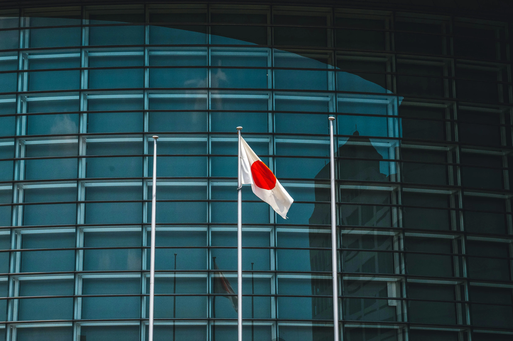
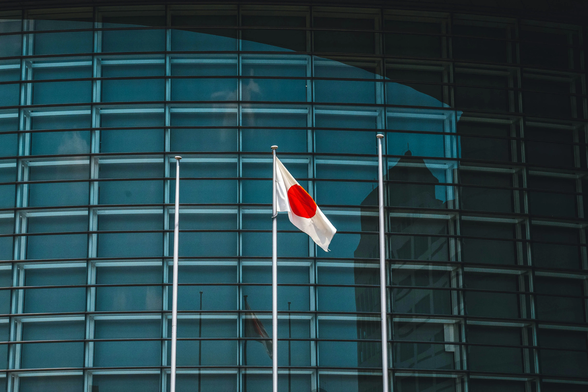
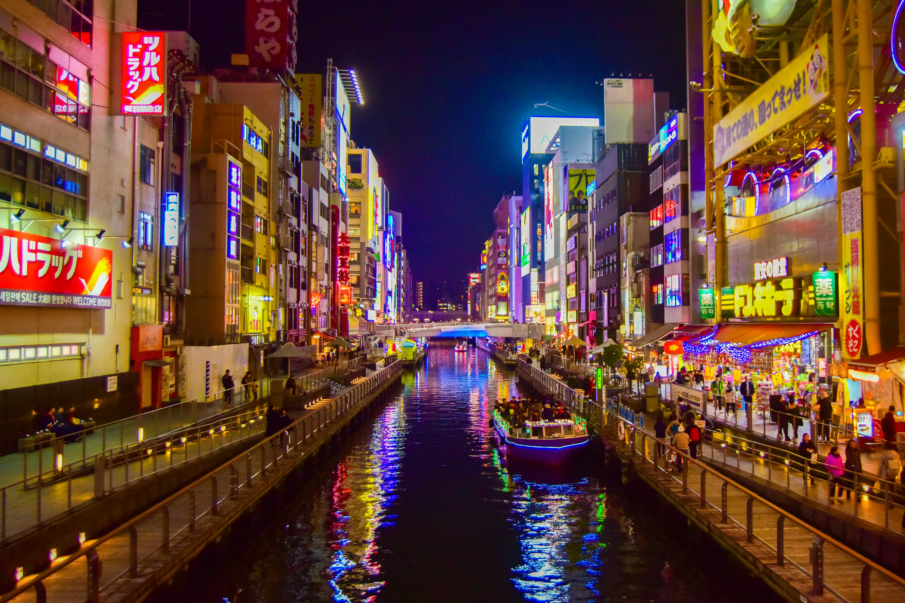
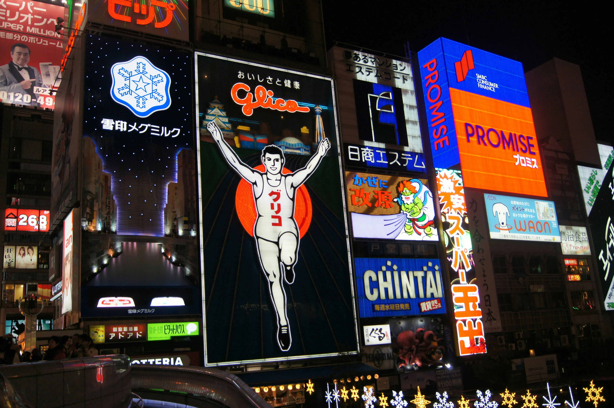
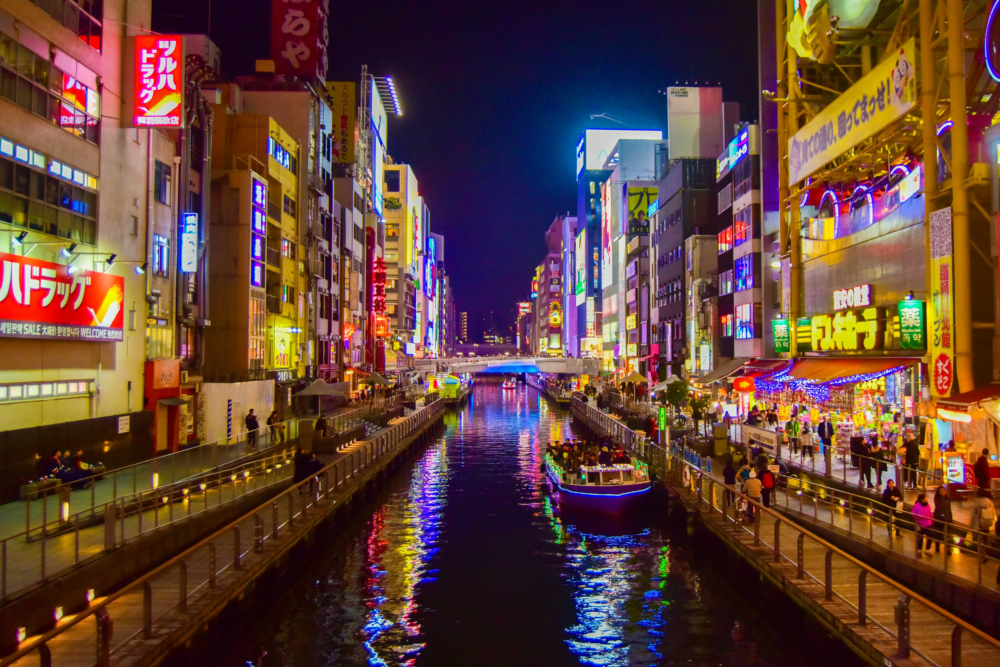
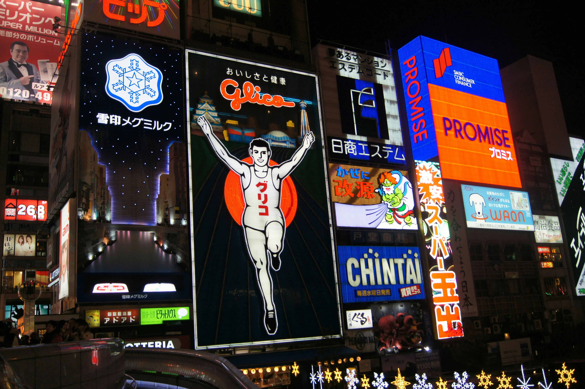

Autumn is also stunning with golden leaves 🍂🍁 and mild weather.


Summer is full of festivals.

winter is perfect for skiing🏂 and enjoying the snowy scenery.


japan is one of those countries you have to visit at least once in your life — it’s truly unique. If you love technology, you’ll be amazed by how advanced everything is — from high-speed trains 🚅 to robots 🤖 that interact with people daily. If you’re into food, Japan offers sushi 🍥 and all kinds of unusual dishes you won’t find anywhere else. It’s also a country rich in culture and traditions — from their deep respect for time and order to the colorful festivals that show their cheerful spirit. Whether you go to experience their technological progress or to explore their fascinating culture, Japan will definitely leave a lasting impression.

 

Spring is the best time to visit Japan, when cherry blossoms 🌸 paint the streets pink.
Autumn is also stunning with golden leaves 🍂🍁 and mild weather.
Summer is full of festivals.
winter is perfect for skiing🏂 and enjoying the snowy scenery.


 




japan’s education system is one of the most disciplined in the world. From a young age, children are taught cooperation, respect, and time management. Japanese people are known for their intelligence and strong skills in science and technology — the result of consistent hard work and dedication. Schools in Japan teach more than academics; they instill values and responsibility, which is why literacy rates are nearly perfect and creativity thrives.


Japan is one of the world’s industrial powerhouses. Companies like Toyota, Sony, and Panasonic lead global innovation. Technology is part of everyday life — from bullet trains to service robots and smart devices. Their focus on precision and quality keeps them at the top of the technological world.


.If you want to know more about a travels Click here
.here are some instructions
.If you have any questions contact me